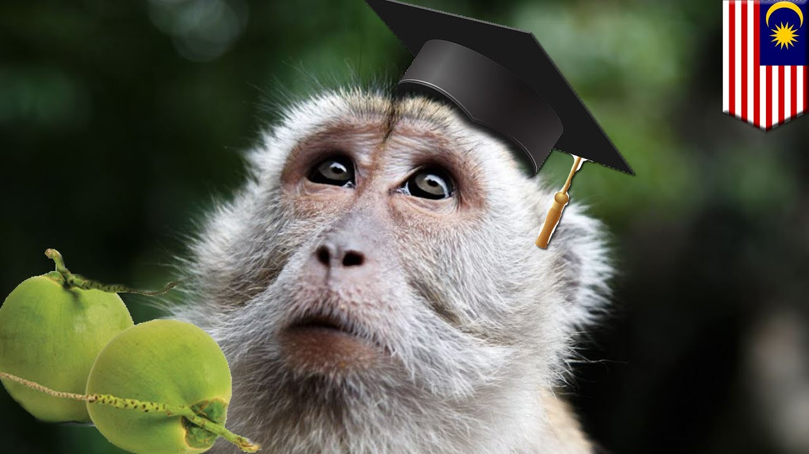
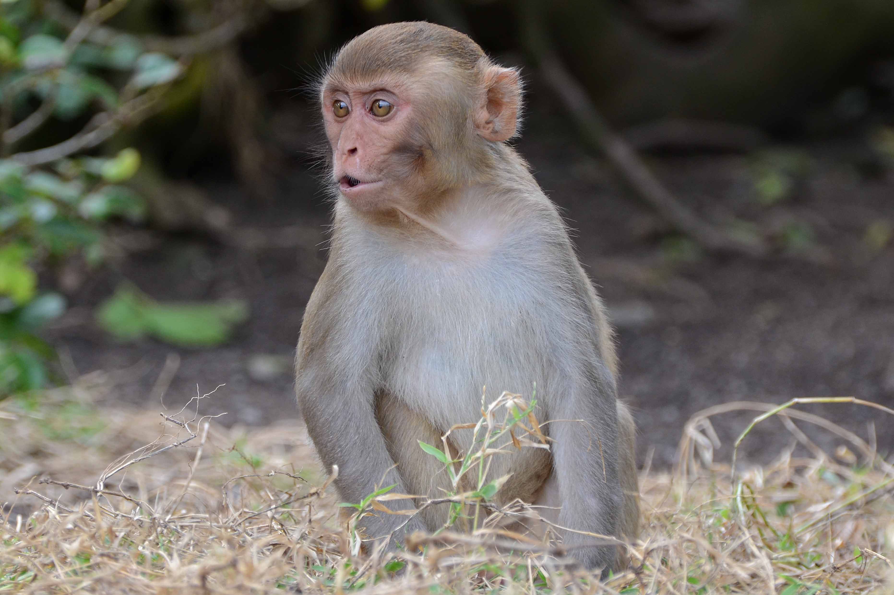
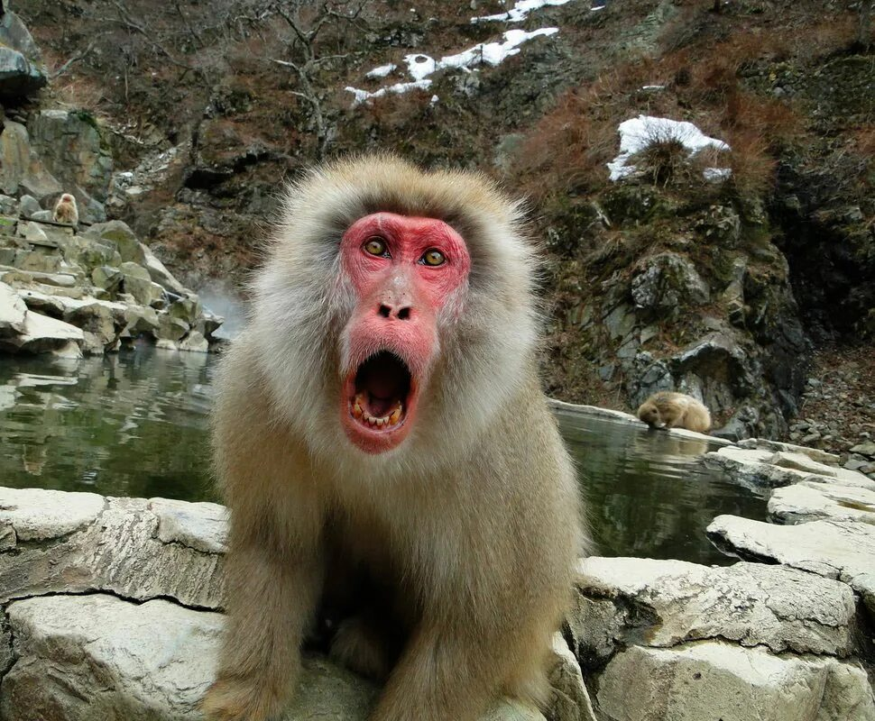
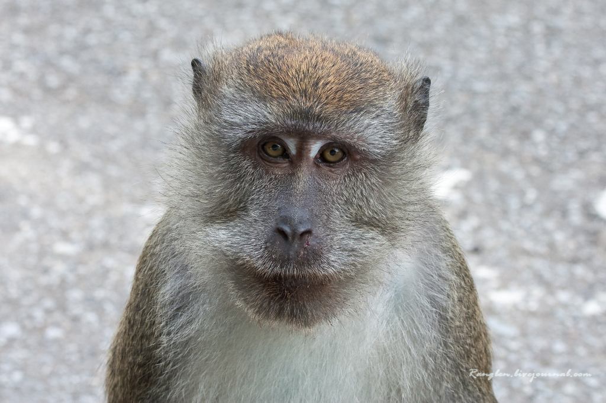
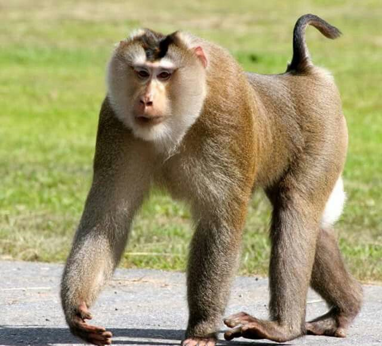
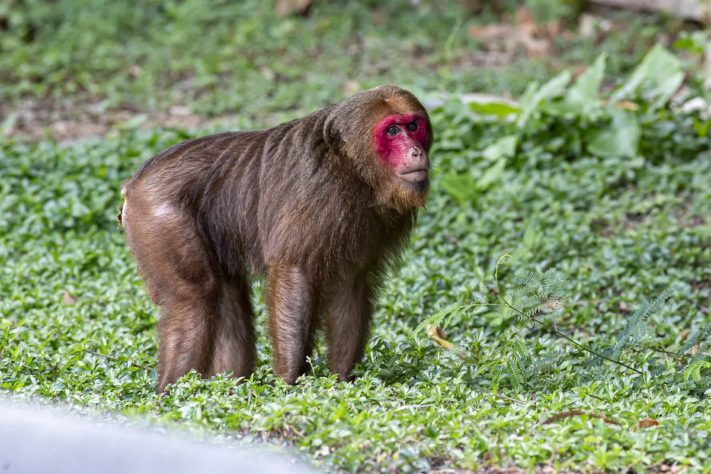
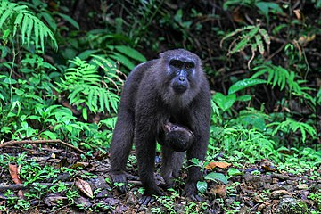
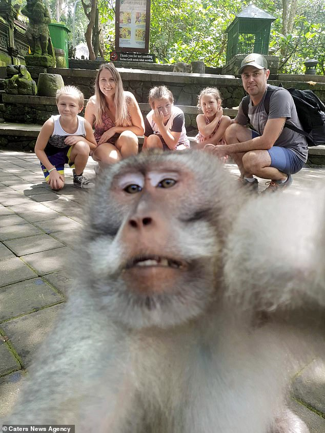

Макака — это род приматов из семейства мартышковых. Эти животные встречаются в основном в Азии, а также в Северной Африке. Макаки являются одним из самых известных и широко распространенных родов обезьян, и они обладают рядом уникальных характеристик и особенностей, которые делают их привлекательными для изучения.

| Вид | Длина тела | Масса | Особенности | Фотография |
| Макака резус | 53 см | 8 кг | Наибольший ариал обитание среди всех приматов (кроме человека) |  |
| Японская макака | 70-95 см | 10-14 кг | Хвост менее 10 см |  |
| Яванский макак | 60-75 см | до 8.5 кг | Вполне спокойная и ручная |  |
| Макака лапундер | 43-77 см | до 14,5 кг | Имеет хвост как у свиньи |  |
| Краснолицый макак | 45-65 см | до 10 кг | В неволе чувствуют себя отлично |  |
| Чёрный макак-маг | 60-70 см | до 10 кг | Хвост представляет собой короткий хвостик |  |
Макаки обладают высоким уровнем интеллекта и могут обучаться различным задачам. Они известны своей способностью использовать инструменты и решать проблемы, что делает их объектами для множества исследований в области психологии и этологии. Эти приматы обитают в различных средах, включая джунгли, горные районы и даже городские пространства. Некоторые виды, такие как маккака резус, адаптировались к жизни вблизи человеческих поселений.

Макаки являются интересными и сложными существами, которые продолжают привлекать внимание ученых и зоологов по всему миру. Они так же являются важной частью природы, которую необходимо сохранять и беречь!
Более подробно ознакомиться с темой можно на данном сайте: safarisafricana.com